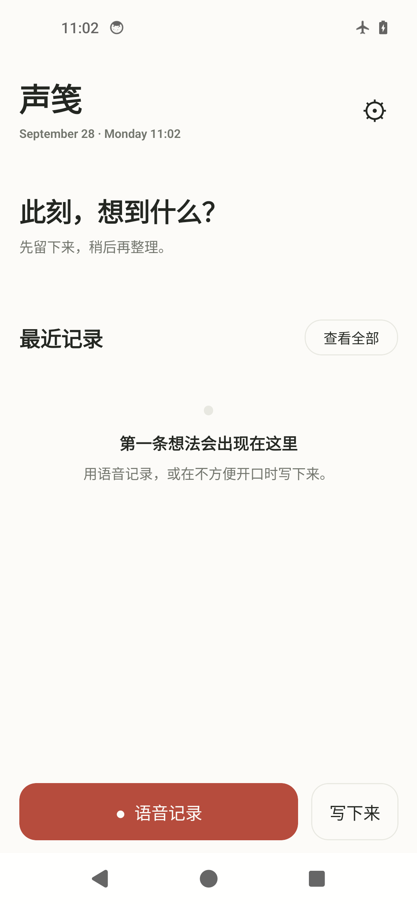
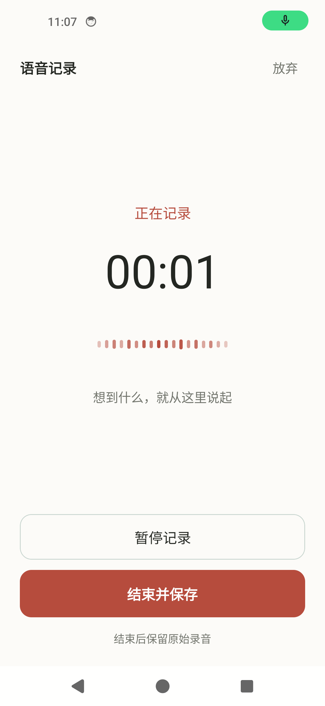
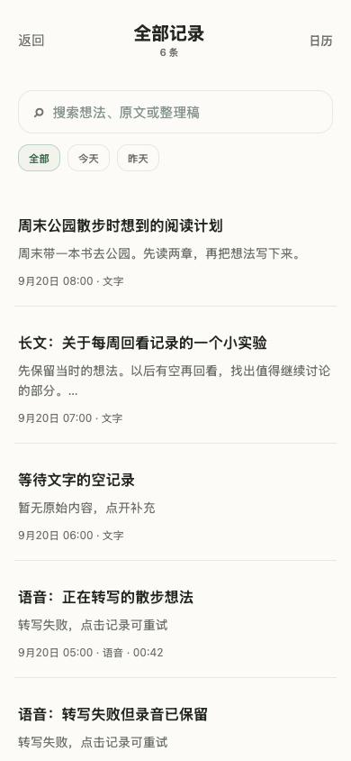
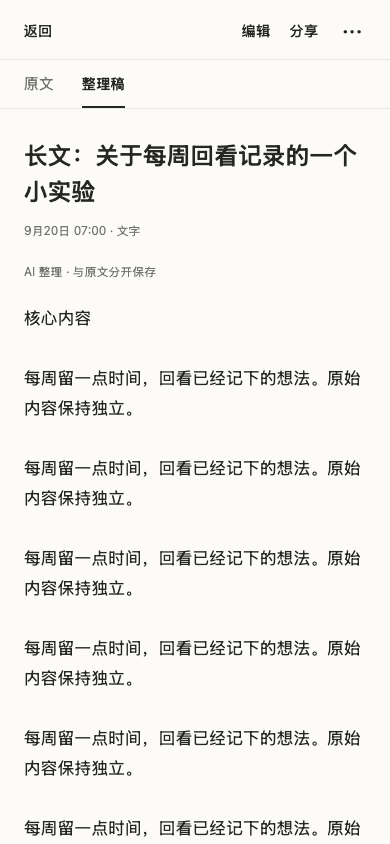

安静、直接、以内容为中心。让想法先被可靠留下，再被清楚地阅读与整理。
核心界面


- 首页：语音记录作为主动作，文字记录保留为次入口。底部按钮通过面积与色彩形成主次，空状态说明如何开始。
- 录音：状态、计时与波形居中排列；暂停使用描边按钮，结束并保存使用实色按钮，区分暂时中断与完成记录。


- 列表：标题、摘要与日期形成稳定层级，支持按内容辨认；细线分隔条目，维持连续浏览。
- 详情：“原文 / 整理稿”分开展示，明确来源与 AI 结果的区别；操作集中于顶部，正文保留完整阅读空间。
视觉语言
- 气质：安静、克制、亲和。暖白背景、深色文字与少量强调色，将注意力留给记录内容。
- 表达：平面展开，以文字、留白和细分隔组织页面，减少装饰与容器嵌套。
字体与层级
- 字体：系统无衬线字体。沿用设备熟悉的中文显示方式，服务记录与阅读。
- 层级：标题以尺寸和字重建立重点；正文使用常规字重与宽松行距，适合口述转写和长段中文。
版式与节奏
- 首页：场景提示、最近记录与捕捉入口纵向展开；留白集中在内容之间，主操作固定在底部。
- 任务页面：录音页集中，列表页紧凑，详情页舒展；随任务改变信息密度，保持一致的对齐与间距秩序。
色彩
暖白背景：
#FCFBF8深色正文：
#242722辅助灰：
#72756D主动作砖红：
#B64C3D品牌灰绿：
#446B51砖红：强调语音记录、结束并保存等关键动作。
灰绿：用于品牌标识与辅助操作，与主动作区分；状态同时保留文字说明。
图像与形状
- 标识：圆润的引语记号，关联口述与记录，以简洁轮廓保持小尺寸识别。
- 形状：正文与列表保持平面；圆角集中于按钮、输入框与临时菜单，区分内容和可操作区域。
动效与反馈
- 录音反馈：波形、计时与状态文字共同表达记录或暂停，避免仅靠动画判断状态。
- 操作反馈：按压与切换保持短促；保存过程明确呈现，录音留存与后续转写、整理分别反馈。
设计参考
配图说明
首页与录音图来自原生 Android 模拟器，列表与详情图来自历史 React Native Web 渲染，均使用合成数据，并非正式版最新真机截图。详情图存在重复测试文字，用于本次布局展示。
留言
由 Disqus 提供。